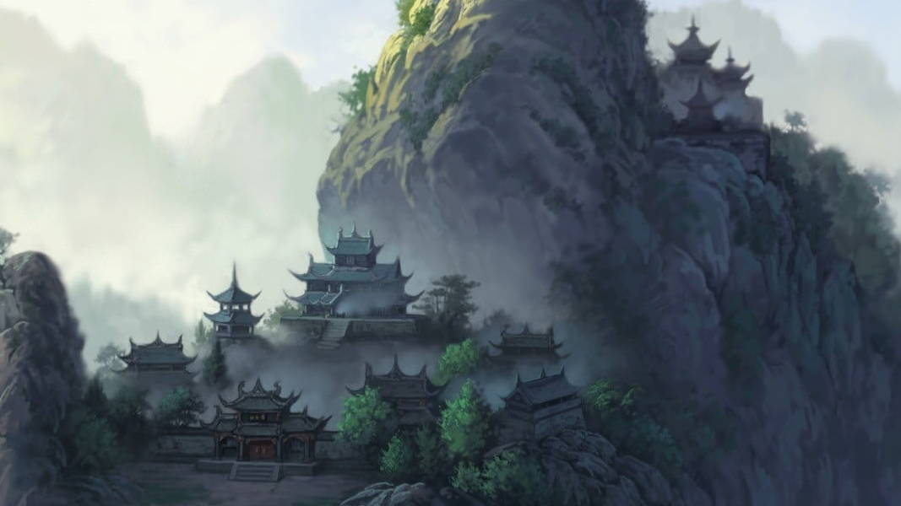

Missão
Formar a próxima geração de líderes militares, xamãs e estrategistas capazes de defender o Império de Nikan contra ameaças internas e externas, valorizando o mérito acima da linhagem e a disciplina acima do medo.

Na Academia Militar Imperial de Sinegard, não formamos soldados comuns. Forjamos a espada e o escudo de Nikan. Aqui, órfãos, plebeus e filhos de nobres sangram no mesmo pátio de treinamento. Você não precisa ter berço, apenas coragem. Entrega total ou morte certa. Se suportar os doze ciclos, sairá como um dos estrategistas, xamãs ou guerreiros mais temidos do continente. A papoula vermelha floresce onde heróis caem – e você será regado pelo próprio sacrifício.
Conheça nossos cursosFormar a próxima geração de líderes militares, xamãs e estrategistas capazes de defender o Império de Nikan contra ameaças internas e externas, valorizando o mérito acima da linhagem e a disciplina acima do medo.
Tornar Sinegard a principal academia de guerra do mundo conhecido, reconhecida por produzir os comandantes mais leais, implacáveis e inovadores – capazes de invocar os deuses ou traçar táticas imbatíveis sem derramar uma gota de sangue.
Curso mais disputado, responsavel por criar a elite dos comandantes
Saiba mais →Torne-se a elite dos buscadores de informações
Saiba mais →Tem oque é preciso, para encontrar o Deus que rege seu destino?.
Saiba mais →